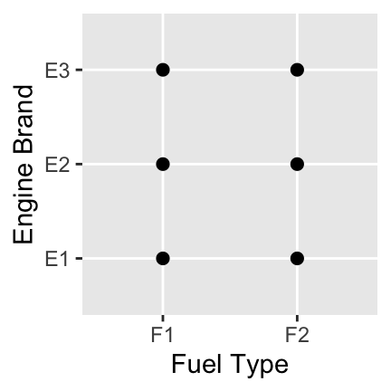
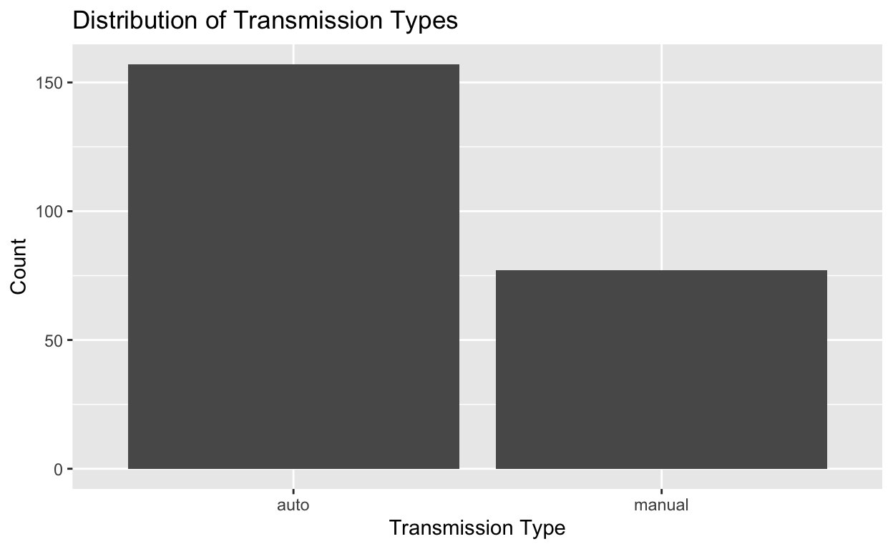
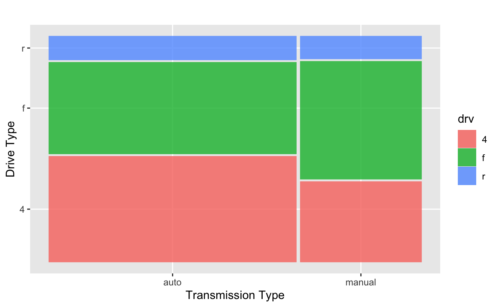

Topic 4: Data Visualization
Through this workbook you’ll learn techniques for data visualization. You’ll think about how the type of plot chosen impacts what information is conveyed (or lost). Choosing the wrong plot type can result in a useless plot (at best) or even a plot which is misleading. Think about the types (numerical, categorical) of variables you are working with and how they dictate which plot type should be utilized – for example, a scatterplot is not appropriate in every scenario!
Objectives
Workbook Objectives: After completing this workbook you should be able to:
- Read a plot, describe any interesting features, and accurately convey the story being told by the plot.
- Identify and utilize the most appropriate plot types for your scenario by considering the types of variables you are working with.
- Utilize color, size, and shape to show additional dimensions of data in a plot, but also recognize that adding more information to a plot negatively impacts our ability to read the graphic.
- Use your new found knowledge of data visualization to generate informative plots which uncover a compelling (and truthful) story about the relationships that exist between variables.
Note, much of this notebook is inspired by Chapter 3 of R for Data Science by Hadley Wickham and Garrett Grolemund. This is a great freely-available resource. Please check it out.
The Grammar of Graphics
Grammar of Graphics: Jeffrey Gitomer said “Your grammar is a reflection of your image”. Here, we take the converse literally. Your image is a reflection of your grammar. Just like a well-written sentence follows the rules of grammar, so does an informative statistical graphic.
- Graphics need a subject (an underlying dataset)
- Graphics need verbs (a type of plotting structure, called a
geom) - Graphics need adjectives (attributes attached to the visualized
data, called
aesthetics) - Graphics need context (a title, scales, axes, legends, etc.)
In this workbook we explore ggplot2 and think about
graphics in terms of their layered grammar.
A Note on Plots: Choosing an appropriate plot is extremely important in data visualization. Some plots don’t make sense for certain variable types. For example, a scatterplot in the case of two-categorical predictors is quite a silly choice – the only thing this plot tells us is that every combination of fuel type and engine brand exists in our dataset. We have no idea which combinations are most or least popular.

The following are some recommended [basic] plots types under certain scenarios:
- A single numerical variable: A histogram, boxplot, or density
- A single categorical variable: A bar plot
- Numerical versus Numerical: A scatterplot, heatmap
- Numerical versus categorical: side-by-side boxplots, stacked or overlayed densities, stacked or overlayed histograms
- Categorical versus categorical: barplot with fill color, mosaic plot, heatmap
Getting Started: Exploring Data
Throughout this workbook, we will explore fuel efficiencies of
multiple classes of vehicles using the mpg data frame.
- Remember that a data frame is like an Excel spreadsheet.
Explore the
mpgdata frame by typingmpgin the following code block and running it.
mpgNotice that when you execute a line of code which just calls the name of a data frame, a snippet of that data frame is printed out. This is true for other objects (variables, vectors, functions, etc) in R as well.
Some Basic Exploratory Functions: It is useful to
know more about your dataset when you first start working with data. R
has a few exploratory functions which you should know about:
names(mpg) prints out a list of names of your data frame’s
columns, head(mpg) will show you the first six rows of the
mpg dataset, dim(mpg) will show you the number
of rows and columns in the dataset, and glimpse(mpg) will
show you information about how R is treating the columns
(int and num denote numerical values while
chr and fct represent character strings and
categorical variables respectively). You might also try
skim(mpg), which comes from the skimr package.
The skim() function provides lots of high-level information
about your dataset from just a single function call. Use the code block
below to try each of these functions and use the output to answer the
following questions:
The diamonds data frame is also available to you. See if
you can get your basic exploratory functions to help you answer the same
questions about the diamonds dataset using the code block
below.
Were you able to obtain the information you were looking for? Be sure to ask a question if not!
Building and interpreting plots
The code below creates a plot of highway miles per gallon
(hwy) against engine displacement displ (a
measure of the size of an engine).
mpg %>%
ggplot() +
geom_point(mapping = aes(x = displ, y = hwy))
Use the plot above to answer the following questions.
A Note on Plotting Structure: Using
ggplot() to create plots in R is daunting at first, but
with practice you will notice the structure is very consistent and
convenient!
- Our plot consists of at least two pieces (subject and verb),
mpg %>% ggplot()tellsggplotthat the subject of our plot is the data contained in thempgtable, while thegeom_point()verb tellsggplotthat we want our data displayed as points (a scatterplot). Theaes()inside ofgeom_point()tellsggplotsome of the adjectives for each individual observation – here, just the location! - In general a simple plot takes the form below – (where the objects in “all caps” are replaced by your data frame, desired geometry type, and aesthetic mappings).
DATA %>%
ggplot() +
geom_TYPE(mapping = aes(MAPPINGS))Use the code block below to make a scatterplot of average city miles
per gallon (cty) explained by engine displacement
(displ).
mpg %>%
ggplot() +
geom_point(mapping = aes(x = displ, y = cty))Now make a scatterplot of average highway miles per gallon
(hwy) explained by number of cylinders
(cyl).
mpg %>%
ggplot() +
geom_point(mapping = aes(x = cyl, y = hwy))Notice that this plot isn’t very useful because the cylinders
variable takes on very few levels. We may be better off if we treat
cyl as if it were a categorical variable here. Check out
some of the other geometry layers available to you in ggplot here. Try building a
set of side-by-side boxplots. If you get an error, be sure to read it –
R suspects that the plot produced wasn’t the one you wanted and provides
a suggestion.
mpg %>%
ggplot() +
geom_boxplot(mapping = aes(x = cyl, y = hwy, group = cyl))Consider the variables for vehicle class (class) and
drive type (drv) as you answer the following questions.
Use the code block below to make a useful plot of class
using geom_bar() with the aesthetics x = class
and fill = drv. Think about the plot you create – what does
it tell you?
mpg %>%
ggplot() +
geom_bar(mapping = aes(x = class, fill = drv))Note: There are many different geom types, and different aesthetic properties which can be passed to geoms. We will see examples throughout the rest of this workbook, but reading the entirety of Chapter 3 in Hadley Wickham’s R for Data Science would be a great start for those of you who are more interested in data visualization.
Plotting more than two variables at once
Let’s go back to our original plot of hwy versus
displ. Maybe we want to color the points in the scatterplot
according to the class of the vehicle. Add a third asthetic,
color = class to the code below and re-run the plot.
mpg %>%
ggplot() +
geom_point(mapping = aes(x = displ, y = hwy))
mpg %>%
ggplot() +
geom_point(mapping = aes(x = displ, y = hwy, color = class))There’s a lot going on here, and it is hard to read. Try copying the
above plotting command, but appending
facet_wrap(~ class, nrow = 2) as a new layer to the plot –
notice that plot layers are added with the + symbol. Again,
think about the resulting plot and how it compares to your previous
colored plot.
mpg %>%
ggplot() +
geom_point(mapping = aes(x = displ, y = hwy, color = class))mpg %>%
ggplot() +
geom_point(mapping = aes(x = displ, y = hwy, color = class)) +
facet_wrap(~ class, nrow = 2)Categorical Variables
We’ve seen plots for categorical variables earlier in this workbook.
Let’s revisit a barplot with fill, similar to the one we constructed
between class and drv earlier and check two
alternative plots which give different insights. We’ll explore the
manual versus automatic transmissions.
mpg %>%
count(trans)Unfortunately the trans variable contains more detailed
transmission information than what we are after. Omitting the last four
characters from levels in the trans column would leave us
with the information we want. We can do that using the
str_sub() function – this function subsets a
string. The first argument is the name of the column whose strings
we want to subset, the second argument is the position of the first
character we’d like to keep and the third argument is the position of
the final character we’d like to keep. Using a negative number here is
shorthand for “from the end”. That is, we’d like to keep all of the
characters starting with the first and stopping five characters from the
end of the string.
mpg %>%
mutate(trans2 = str_sub(trans, 1, -5)) %>%
ggplot() +
geom_bar(mapping = aes(x = trans2)) +
labs(x = "Transmission Type",
y = "Count",
title = "Distribution of Transmission Types")
From the plot above we can tell that there are about twice as many
vehicles in our dataset with automatic transmissions as there are with
manual transmissions. Create a similar plot below, which fills the bars
by the drv variable.
mpg %>%
mutate(trans2 = str_sub(trans, 1, -5)) %>%
ggplot() +
geom_bar(mapping = aes(x = trans2, fill = drv)) +
labs(x = "Transmission Type",
y = "Count",
title = "Distribution of Transmission Types")Start with the code above but add a fill argument to the
mapping in the geom_bar() plot layer. Note
that we need to re-engineer the trans2 variable since we
never saved a new copy of the data frame with this variable in it. That
is, we temporarily created that variable just for the plot above.
The problem now is the difficulty in comparing the proportions of
drive types within each of these classes. We can fix this by using the
position argument. Outside of aes() but still within
mapping() add an argument position = "fill" to
the pre-built plot – you’ll need to include a comma after
aes() since commas separate arguments. Think about what is
gained and lost in this new plot.
mpg %>%
mutate(trans2 = str_sub(trans, 1, -5)) %>%
ggplot() +
geom_bar(mapping = aes(x = trans2, fill = drv)) +
labs(x = "Transmission Type",
y = "Count",
title = "Distribution of Transmission Types")mpg %>%
mutate(trans2 = str_sub(trans, 1, -5)) %>%
ggplot() +
geom_bar(mapping = aes(x = trans2, fill = drv), position = "fill") +
labs(x = "Transmission Type",
y = "Count",
title = "Distribution of Transmission Types")Great! But the problem now is that we’ve lost the idea that there are more automatic vehicles than there are manual vehicles in this dataset. As a third option, we can consider a mosaic plot.
mpg %>%
mutate(trans2 = str_sub(trans, 1, -5)) %>%
ggplot() +
geom_mosaic(mapping = aes(x = product(trans2), fill = drv)) +
labs(x = "Transmission Type",
y = "Drive Type",
title = "")## Warning: `unite_()` was deprecated in tidyr 1.2.0.
## ℹ Please use `unite()` instead.
## ℹ The deprecated feature was likely used in the ggmosaic package.
## Please report the issue at <https://github.com/haleyjeppson/ggmosaic>.
## This warning is displayed once every 8 hours.
## Call `lifecycle::last_lifecycle_warnings()` to see where this warning was
## generated.
The advantage to the mosaic plot is that it contains all of the information from the two separate plots above, but it is all combined into one plot! We’ve built a visualization that manages to convey that the proportion of manual vehicles in our dataset outweighs the proportion of automatics, and we can also compare the distribution of drive types within each of these two classes.
Submit
Summary
Congratulations! You made it through a first discussion on data
visualization. You should know, however, that this is just the “tip of
the iceberg” – there’s much more to learn. I’ve already suggested the
Data Visualization chapter of Hadley Wickham’s R for Data
Science, but he also has an entire book devoted to the
ggplot2 package in R – check it out if you are interested
in learning more! Additionally, you might follow
#TidyTuesday on Twitter to see (and maybe even participate
in) a social community on data visualization.
In this workbook you learned the following:
- Variable types dictate the kinds of plots which can be used to create effective visuals. Always consider your variable types!
- Plotting with
ggplot()follows a grammar of graphics and layered plotting structure, with “+” separating each plot layer. The structure of aggplotis as follows:
data_frame_name %>%
ggplot() +
geom_TYPE(mapping = aes(MAPPINGS))Note that the
MAPPINGSyou need are determined by the geometryTYPEyou are using.There are entire courses devoted to data visualization. You’ve had a crash course here but there is much more to be learned. Check out the two Wickham books, use the
ggplot2documentation, or check out this cheatsheet for more inspiration!
A final note: These interactive workbooks allow me
to hide some of the setup requirements from you so that we can focus on
the task at hand – in this workbook, plotting. When you make the switch
to using a standalone R instance you’ll need to install and load
libraries to expand R’s functionality. You can do this with the
install.packages() and library() functions.
You would need the ggplot2 or tidyverse
libraries as well as skimr and ggmosaic to run
the code for this workbook in a local R session.